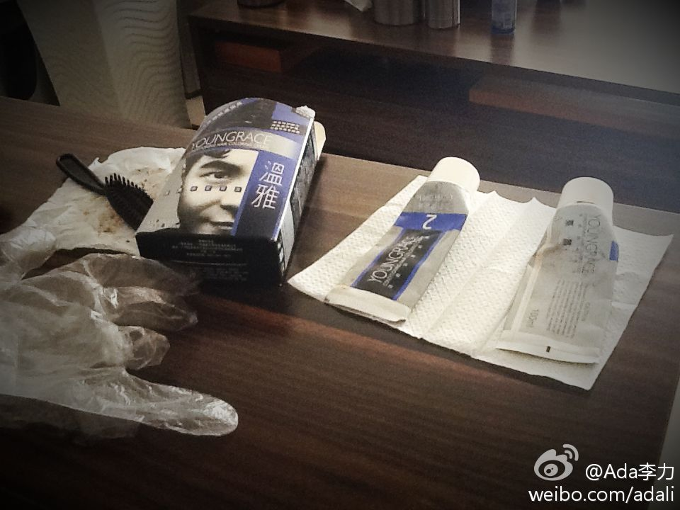

姣姣最近喜欢上扔沙包游戏，两人面对面相互扔接。每次她都找我陪她玩，不找爸爸。虽然我不会说这游戏幼稚无聊什么的，但每次和姣姣玩这个游戏，就会想朋友家的一条狗，它回热情地叼个网球给到访客人，你要扔得远远地，那狗就嗖地蹿出去叼回，快乐地递回给你，满脸期待地等你再次扔出球…

Ada李力
2013-02-09
Ada李力
2013-02-09

@Ada李力:
姣姣最近喜欢上扔沙包游戏，两人面对面相互扔接。每次她都找我陪她玩，不找爸爸。虽然我不会说这游戏幼稚无聊什么的，但每次和姣姣玩这个游戏，就会想朋友家的一条狗，它回热情地叼个网球给到访客人，你要扔得远远地，那狗就嗖地蹿出去叼回，快乐地递回给你，满脸期待地等你再次扔出球…
Ada李力
2013-02-09
我是明俊的御用染发师。本来要给他拍照，他死活不让。
- 
Ada李力
2013-02-09
大家多合作，新的一年一起努力。
@lee-xh:
收到很多群发的祝福短信, 在这里回想2012年, 要感谢太多的人, @Ada李力 @Born白清杰 @曹伟-咆哮的大富康 @sudison @家有弍宝 @CSDN包研 @光剑君 等无法一一列举. 是你们帮助@CloudStack中国 快速成长. 在新春佳节之际, 祝各位开心快乐, 希望我们一起愉快的生活,工作.